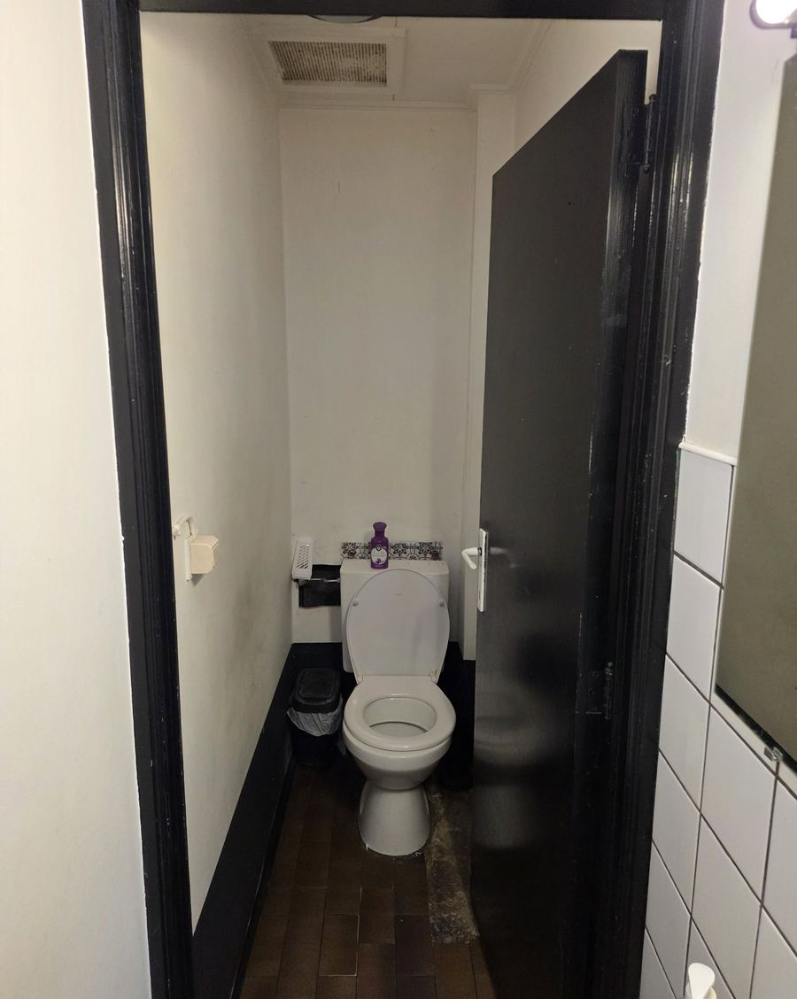
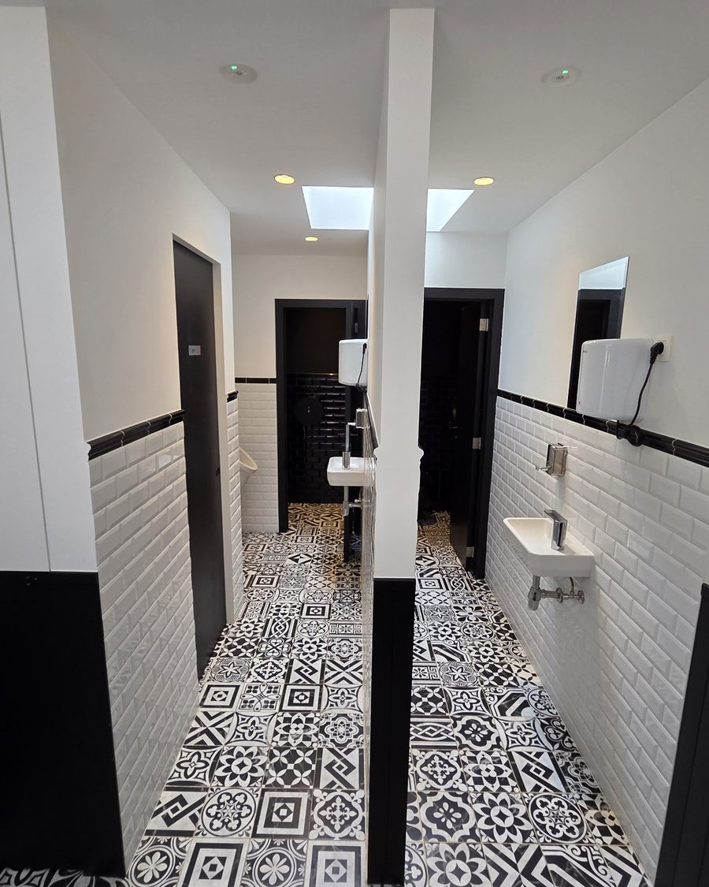
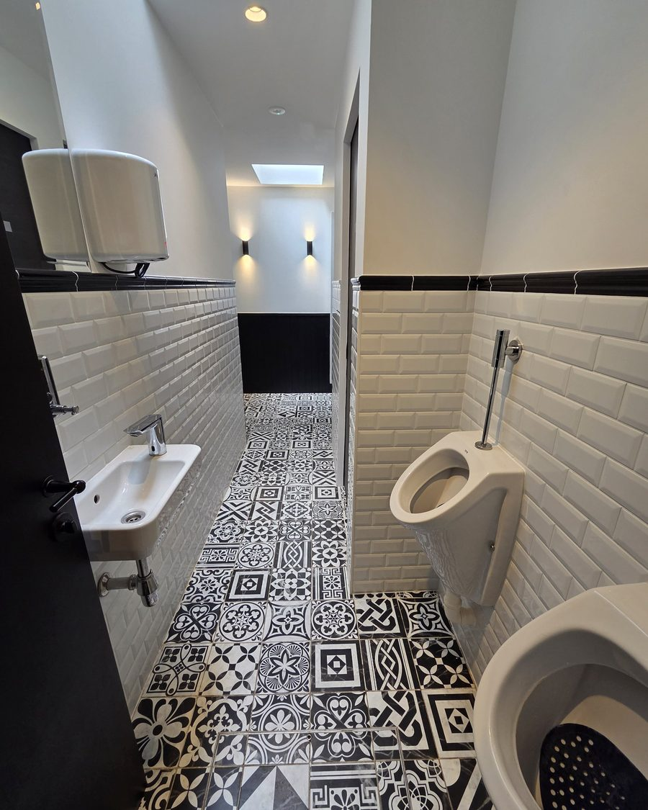

A drink, a generous plate, and no need to rush.
- Light meals all day
- Opposite Wavre church
- Open till 2am at weekends
A drink, a generous plate, and no need to rush.
The menu
Light meals served all day: the classics done properly, and now and then a slow-cooked dish when the chef feels like it.
Served all day
With your drink
Seasonal: ask at the bar what's on now
The dish of the day is announced at the bar. Prices in euros, VAT included.
Opening hours
| Monday, Tuesday, Thursday | 10.30am – 1am |
|---|---|
| Wednesday market day | 8am – 1am |
| Friday | 10.30am – 2am |
| Saturday market day | 8am – 2am |
| Sunday | 1pm – 1am |
On the eve of public holidays: until 2am.
Closed from 20 January to 12 March 2027 for refurbishment.
Special opening hours are posted on our Google listing.
Getting here

The renovation
In January 2026, the back of L’Escale was completely redone: corridor, toilets, black and white cement tiles, black panelling, swing doors and skylights. The same old-style café feel, with today’s finishes.
The work was carried out by Bien Bâti, a renovation company based in Rhode-Saint-Genèse. Next step in January 2027: the front room, the bar counter and the façade.
Before · early January 2026




After



